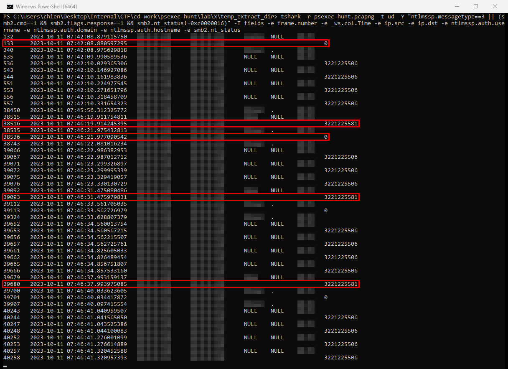
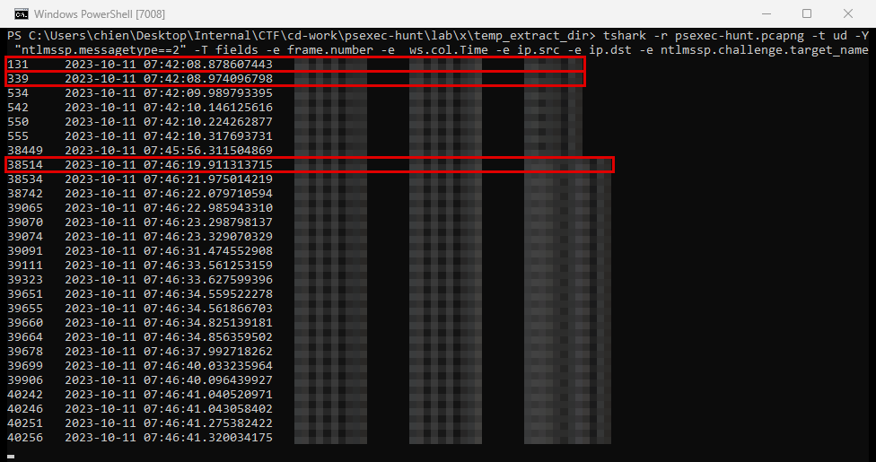
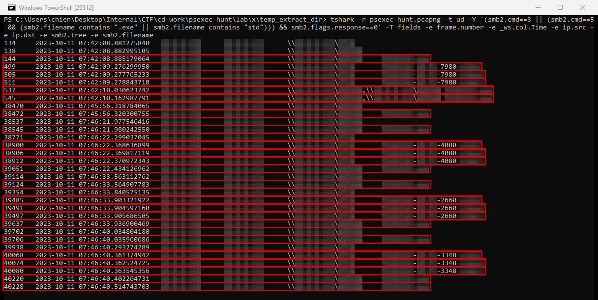
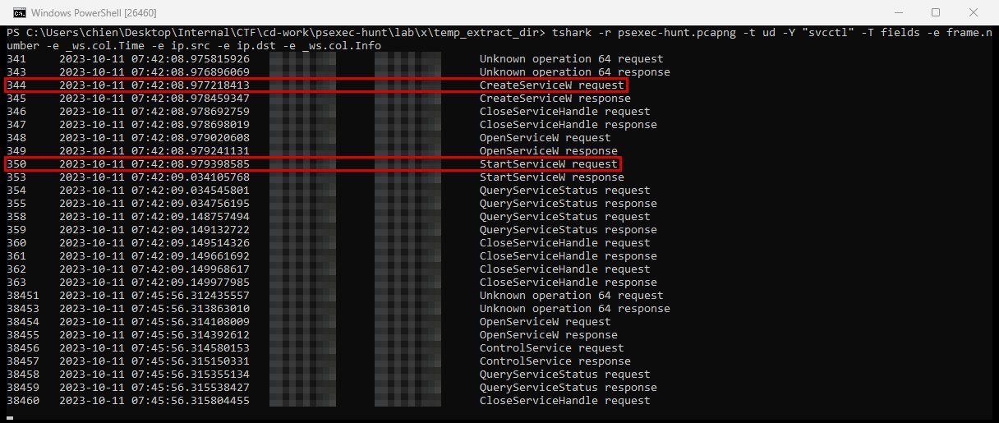

PsExec Hunt
- Lab: PsExec Hunt trên CyberDefenders. Nhóm Network Forensics, độ khó Easy, đã retired.
- Dữ liệu: một file PCAP (10 MB, ngày 11/10/2023) chứa lưu lượng SMB2 và MSRPC giữa ba máy trạm trong subnet
10.0.0.0/24. - Công cụ:
tshark(bản dòng lệnh của Wireshark). Wireshark cho kết quả tương tự với cùng bộ lọc. - Quy ước:
- Giờ trong PCAP là UTC. Mốc chính ghi dạng
UTC (UTC+7). - Khung đỏ trên ảnh là chỗ cần chú ý.
- Vùng làm mờ là giá trị trùng với đáp án của lab: IP, tên máy, tài khoản, tên file service, tên share.
Tóm tắt kết quả
- Một máy trạm (gọi là máy nguồn) xác thực NTLMv2 tới máy đích thứ nhất bằng một tài khoản domain, ghi file service của PsExec vào share quản trị, tạo và chạy service qua
svcctl, rồi mở ba named pipe để chạy lệnh tương tác. - Khoảng 4 phút sau, máy nguồn dừng service trên máy đích thứ nhất.
- Ngay sau đó, máy nguồn thử xác thực tới máy đích thứ hai bằng một tài khoản khác và bị từ chối, rồi đăng nhập thành công bằng một tài khoản cục bộ. Nó chạy PsExec 3 lần trên máy này trong khoảng 20 giây.
- Có bằng chứng di chuyển ngang (lateral movement) từ máy nguồn sang cả hai máy đích: file service PsExec được ghi, service được tạo và chạy, pipe stdin/stdout/stderr được mở.
Bước 1: tài khoản xác thực và tên máy đích
- Mục tiêu: tìm máy khởi tạo, tài khoản được dùng và kết quả xác thực.
- Cách làm: lọc gói NTLMSSP_AUTH (máy nguồn gửi tài khoản), ghép với kết quả SMB2 Session Setup ngay sau đó. Lọc NTLMSSP_CHALLENGE để lấy tên máy đích.
tshark -r psexec-hunt.pcapng -t ud -Y "ntlmssp.messagetype==3 || (smb2.cmd==1 && smb2.flags.response==1 && smb2.nt_status!=0xc0000016)" -T fields -e frame.number -e _ws.col.Time -e ip.src -e ip.dst -e ntlmssp.auth.username -e ntlmssp.auth.domain -e ntlmssp.auth.hostname -e smb2.nt_status
tshark -r psexec-hunt.pcapng -t ud -Y "ntlmssp.messagetype==2" -T fields -e frame.number -e _ws.col.Time -e ip.src -e ip.dst -e ntlmssp.challenge.target_name


- Nhận định:
- Cả hai máy đích đều do cùng một máy nguồn kết nối tới. Kết nối SMB trực tiếp giữa các máy trạm là bất thường, vì máy trạm thường chỉ kết nối SMB tới máy chủ file hoặc Domain Controller.
- Trên máy thứ hai, chuỗi "thất bại rồi thành công bằng tài khoản khác" lặp lại 3 lần. Mỗi lần, tài khoản đầu tiên bị từ chối, sau đó một tài khoản cục bộ (domain là ".") được chấp nhận.
- Hướng giải: IP nguồn ở cột thứ ba. Tên tài khoản là ô đã làm mờ ở frame 132, ngay trước phản hồi thành công ở frame 133. Tên máy đích là cột cuối của ảnh thứ hai, theo IP của từng máy.
Bước 2: ghi file service vào share quản trị
- Mục tiêu: xác định file nào được đẩy sang máy đích và qua share nào.
- Cách làm: lọc SMB2 Tree Connect Request (kết nối tới share) và SMB2 Create Request (mở hoặc tạo file, pipe).

- Nhận định:
- Một share là share quản trị trỏ tới thư mục Windows, nơi file service được ghi vào. Share còn lại dùng cho giao tiếp giữa tiến trình (named pipe). Ghi được vào share quản trị chứng tỏ tài khoản có quyền quản trị cục bộ trên máy đích.
- File
.keyvà tên pipe có dạng<tên service>-<tên máy nguồn>-<số>. Đây là mẫu đặc trưng của PsExec bản mới. - Hướng giải: tên share ở cột
share. Tên file service ở frame 144.
Bước 3: tạo và chạy service qua svcctl
- Mục tiêu: xác nhận file vừa ghi được chạy thành service.
- Cách làm: lọc giao thức
svcctl(giao diện RPC của Service Control Manager).

- Nhận định:
- Thứ tự chép file, CreateServiceW, StartServiceW rồi mở pipe chính là cách PsExec hoạt động.
- Phiên lúc 07:45:56 UTC dừng service. PsExec tự làm việc này khi phiên lệnh kết thúc, nên đây là lúc kẻ tấn công rời máy thứ nhất.
- Chưa đủ dữ liệu để biết lệnh cụ thể đã chạy. Nội dung trong pipe được mã hóa theo phiên PsExec. Cần thêm log tạo tiến trình có command line (Security 4688 hoặc Sysmon) trên máy đích.
Dòng thời gian
- 11/10/2023 07:42:08 UTC (14:42:08 UTC+7): máy nguồn xác thực tới máy đích thứ nhất, kết nối share, ghi file service. Nguồn: PCAP, frame 132 đến 144.
- 07:42:08 đến 07:42:09 UTC: CreateServiceW, StartServiceW, mở pipe stdin/stdout/stderr. Nguồn: PCAP, frame 344 đến 511.
- 07:45:56 UTC (14:45:56 UTC+7): dừng service trên máy đích thứ nhất. Nguồn: PCAP, frame 38451 đến 38463.
- 07:46:19 UTC (14:46:19 UTC+7): xác thực thất bại tới máy đích thứ hai, 2 giây sau thành công bằng tài khoản cục bộ. Nguồn: PCAP, frame 38515 và 38535.
- 07:46:21 đến 07:46:41 UTC (14:46 UTC+7): PsExec chạy 3 lần trên máy đích thứ hai, mỗi lần một bộ pipe mới. Nguồn: PCAP.